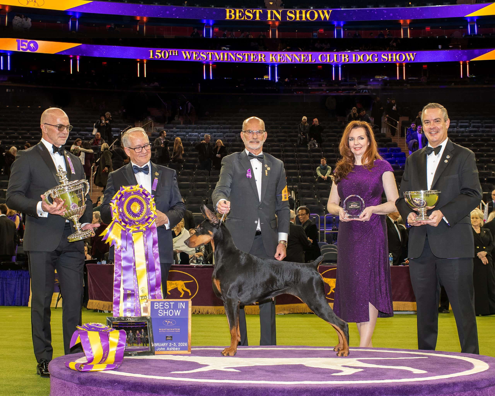

Westminster Kennel Club Dog Show
She's Beauty & Grace, She's Best in Show (2026)
BY: Jianna Valenti, February 12th, 2026
The 150th Annual Westminster Kennel Club Dog Show took place from January 31 to February 3, 2026, in New York City, featuring over 3,000 top-winning dogs. The prestigious event held competitions at the Jacob K. Javits Convention Center and Madison Square Garden.
The Westminster Kennel Club, established in 1877, is America’s oldest organization dedicated to the sport of dogs. It hosts the iconic, all-breed Westminster Kennel Club Dog Show, the second-longest, continuously held sporting event in the U.S., and since 1948, the longest nationally televised live dog show.
The annual dog show—a conformation competition for purebred dogs—and the Masters Agility Championship and Masters Obedience Championship— where dogs from all backgrounds are eligible to compete—make Westminster Week with its nearly 3,000 dogs from the U.S. and around the world a pinnacle experience for any dog lover. America’s Dog Show has captivated canine enthusiasts for more than a century.
The winner was "Penny," a 4-year-old Doberman Pinscher (GCHP CH Connquest Best Of Both Worlds), marking the fifth Doberman victory in the show's 150-year history and the first since 1989. What a great way to ring in the new year for the world and for this breed!
“It’s been a long time, 37 years,” says Linton, who last won the group with a Doberman Pinscher named “Indy.” “I think it was ’89 when we won with Indy, and to be here at the 150th Westminster Dog show is just incredible.” Penny bested the other 32 dogs in the group to move on to Best in Show.